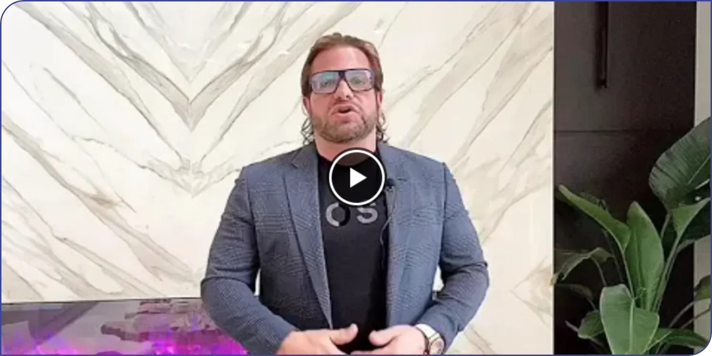
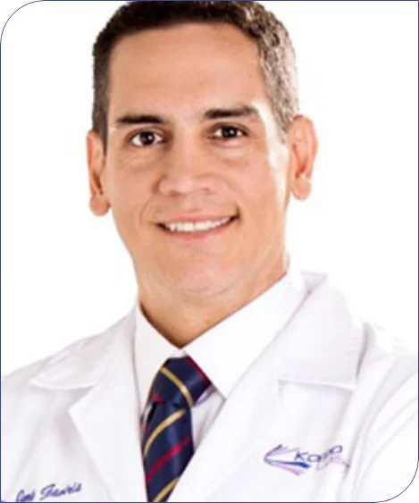

No-Downtime Laser Face Lifts, Eye Lifts and Lip Plumping - Dr. Jorge Gaviria.
Date: Thursday April 16, 2020 at 5:00 PM EST (ends at 7:00 PM)

No-Downtime Laser Face Lifts, Eye Lifts and Lip Plumping

JDr.Jorge Gaviria - Gynecologist, Aesthetic, Pgysician, Laser and Anti-aging Specialist
The facelift of the stars! Explore the applications of Fotona’s complementary Er:YAG and Nd:YAG wavelengths applied in 4 different modes: SMOOTH®, FRAC3®, PIANO® and SupErficial™ to improve deep, medial and superficial connective structures of the skin, while simultaneously targeting different skin imperfections.
Dr. Jorge Gaviria, is a world-renowned specialist in Aesthetic Medicine and Gynecology. He is board certified by the American Board of Laser Surgery and currently serves as the head medical supervisor to the Advanced
Laser Institute of America (ALIA). He has won 5 international awards for his work, and among many other recognitions, was the first person to make scientific publications on non-ablative laser vaginal tightening.